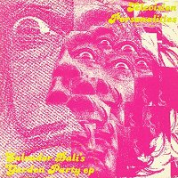

Television Personalities |
1989 - Fire - BLAZE37S - 7" Songs: Salvador Dali's Graden Party The Room At The Top Of The Stairs |
 1989 - Fire - BLAZE37T - 12" Songs: Salvador Dali's Graden Party The Room At The Top Of The Stairs This Time There's No Happy Ending Part One: Fulfilling The Contractual Obligations
Daniel Treacy - guitars, keyboards, vocals |